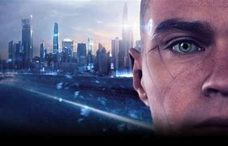

Detroit: Become Human is a 2018 adventure game developed by Quantic Dream. The game was released for the PlayStation 4 in May 2018, published by Sony Interactive Entertainment. A port for Windows was released in December 2019, published by Quantic Dream. The plot follows three androids: Kara (Valorie Curry), who escapes her owner to explore her newfound sentience and protect a young girl; Connor (Bryan Dechart), whose job is to hunt down sentient androids; and Markus (Jesse Williams), who devotes himself to releasing other androids from servitude. The player's choices affect the course and outcome of the story. Detroit: Become Human is based on Quantic Dream's 2012 technology demonstration Kara, which also starred Curry. To research the setting, the developers visited Detroit, Michigan. Writer and director David Cage completed the script in over two years. An engine was built to complement the game and hundreds of actors were cast before shooting and animation. Philip Sheppard, Nima Fakhrara, and John Paesano served as composers for Kara, Connor, and Markus, respectively. Detroit: Become Human received generally positive reviews from critics, who praised the setting, visuals, story, main characters, their voice actors, the impact choices had on the narrative, and flowchart feature, but criticised the motion controls, mishandling of historical and thematic allegories, and aspects of the plot and characters. The game had sold 8 million units by January 2023, making it Quantic Dream's best-seller.
